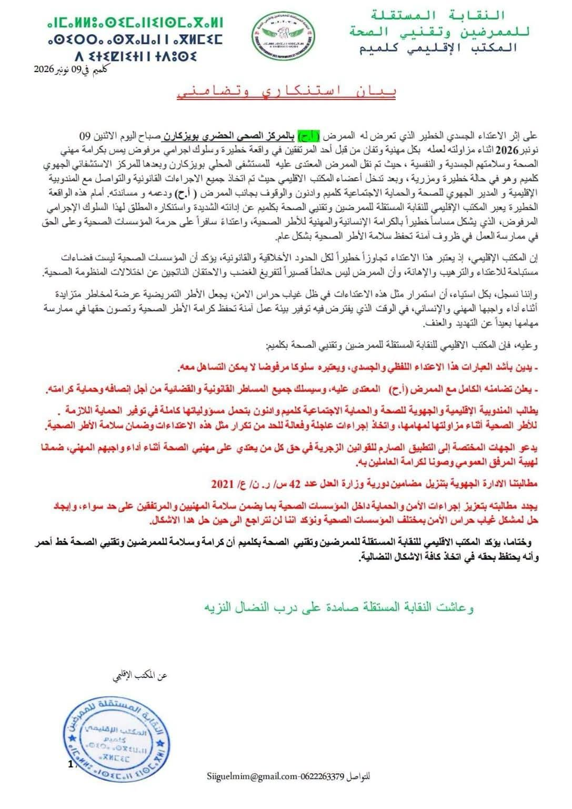

كلميم: بيان استنكاري وتضامني مع الممرض (أ.ح) إثر الاعتداء الجسدي الخطير الذي تعرض له بالمركز الصحي الحضري بويزكارن

على إثر الاعتداء الجسدي الخطير الذي تعرض له الممرض (أ.ح) بالمركز الصحي الحضري بويزكارن صباح يوم الإثنين 09 نونبر 2026، أثناء مزاولته لعمله بكل مهنية وتفانٍ، من قبل أحد المرتفقين في واقعة خطيرة وسلوك إجرامي مرفوض يمس بكرامة مهنيي الصحة وسلامتهم الجسدية والنفسية، حيث نُقل الممرض المعتدى عليه إلى المستشفى المحلي بويزكارن ثم إلى المركز الاستشفائي الجهوي كلميم وهو في حالة خطيرة ومزرية، تدخّل أعضاء المكتب الإقليمي واتُّخذت جميع الإجراءات القانونية، مع التواصل مع المندوبية الإقليمية والمدير الجهوي للصحة والحماية الاجتماعية والوقوف بجانب الممرض ودعمه ومساندته.
ويعبّر المكتب الإقليمي للنقابة المستقلة للممرضين وتقنيي الصحة بكلميم عن إدانته الشديدة واستنكاره المطلق لهذا السلوك الإجرامي، الذي يشكل مساساً خطيراً بالكرامة الإنسانية والمهنية للأطر الصحية، واعتداءً سافراً على حرمة المؤسسات الصحية، مؤكداً أن المؤسسات الصحية ليست فضاءات مستباحة للاعتداء والترهيب والإهانة، وأن الممرض ليس حائطاً قصيراً لتفريغ الغضب والاحتقان الناتجين عن اختلالات المنظومة الصحية.
وعليه، فإن المكتب الإقليمي: ▪️ يدين بأشد العبارات هذا الاعتداء اللفظي والجسدي، ويعتبره سلوكاً مرفوضاً لا يمكن التساهل معه. ▪️ يعلن تضامنه الكامل مع الممرض (أ.ح)، وسيسلك جميع المساطر القانونية والقضائية من أجل إنصافه وحماية كرامته. ▪️ يطالب المندوبية الإقليمية والجهوية للصحة والحماية الاجتماعية بكلميم وادنون بتحمل مسؤولياتها كاملة في توفير الحماية اللازمة للأطر الصحية أثناء مزاولتها لمهامها، واتخاذ إجراءات عاجلة وفعالة للحد من تكرار مثل هذه الاعتداءات. ▪️ يدعو الجهات المختصة إلى التطبيق الصارم للقوانين الزجرية في حق كل من يعتدي على مهنيي الصحة أثناء أداء واجبهم المهني، ضماناً لهيبة المرفق العمومي وصوناً لكرامة العاملين به. ▪️ يطالب الإدارة الجهوية بتنزيل مضامين دورية وزارة العدل عدد 42 س/ر.ن/ع/2021. ▪️ يجدد مطالبته بتعزيز إجراءات الأمن والحماية داخل المؤسسات الصحية، وإيجاد حل لمشكل غياب حراس الأمن بمختلف المؤسسات الصحية، مؤكداً أنه لن يتراجع إلى حين حل هذا الإشكال.
وختاماً، يؤكد المكتب الإقليمي أن كرامة وسلامة الممرضين وتقنيي الصحة خط أحمر، وأنه يحتفظ بحقه في اتخاذ كافة الأشكال النضالية.
فتح في تطبيق النقابة